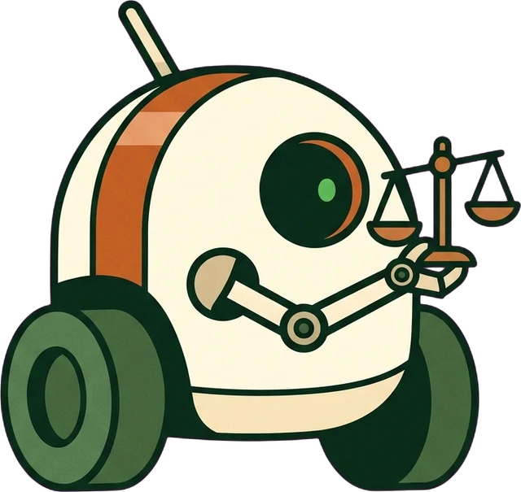

Accueil › Comparateur
Comparer des robots tondeuses

55 robots · prix du 15/11 à 7 h
Touchez deux ou trois robots. Le tableau se met à jour, le meilleur de chaque ligne passe en vert.
En une phrase
Pente et bruit annoncés par les fabricants. Coût sur 5 ans : prix du jour, lames et électricité.

Trop de choix ?
Le quiz en garde un seul, selon votre jardin.